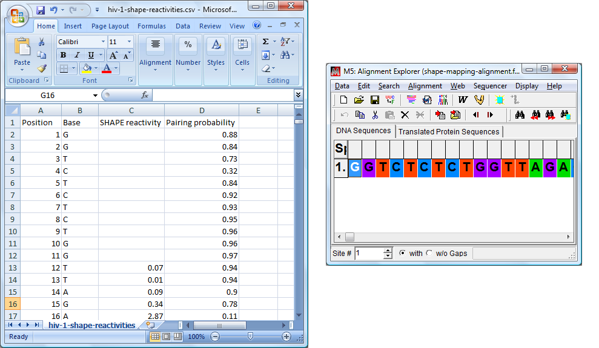
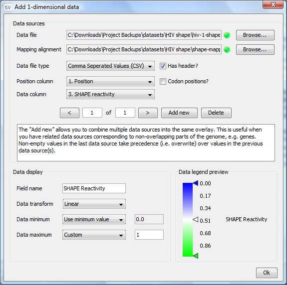

Creating a 1D data source
How to create a 1D data source
When using the dataset creation wizard on your own custom dataset it is necessary to get your data into a format that StructureVis can recognize.
In order to do this for one-dimensional data overlays, StructureVis requires a CSV file and a corresponding mapping alignment.
Paste your data into your favourite spreadsheet editor, where the columns represent different data items (above right). The first row can be optionally used to label the data.

Typically you will only require two columns in your spreadsheet: a position column and a data column for a single data item (although more data columns can be specified if you so wish).
The position column is a list of coordinates that correspond to column positions in the mapping alignment (above right), where 1 corresponds to the first nucleotide column. The data column is a list of numeric data values.
In the example above there are two data columns: 'SHAPE reactivity' and 'Pairing probability'. For illustration purposes a 'Base' column has been added to show how the positions should correspond to the mapping alignment.
Once you have completed creating your spreadsheet, save it as a CSV (Comma Seperated Values) file. It can now be loaded into the dataset creator, see below:
